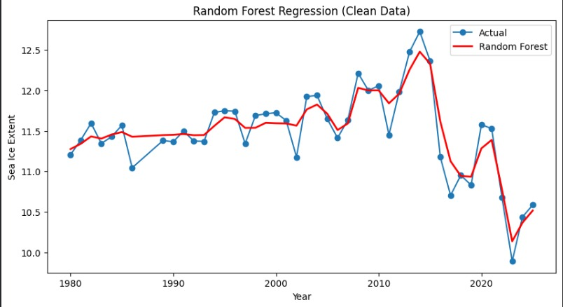

Overview
This section presents the machine learning models implemented for our project. To satisfy the project requirement, we selected different models for each of our dataset: Frequent Pattern Mining, Classification, Clustering, and Regression. Each model was chosen based on the structure of the dataset, the type of question being answered, and the preprocessing steps required before training or analysis.
Apriori / FP-Growth
Used to identify recurring co-occurrence patterns in transformed categorical or binned observational records.
Decision Tree / SVM
Used to classify observations such as species category, anomaly class, or environmental grouping based on engineered features.
K-Means / DBSCAN
Used to discover natural groupings in the data without labels, especially after feature scaling and dimensionality reduction.
Linear Regression
Used to model and predict continuous outcomes such as temperature or count-related trends from numerical predictors.
How to use this page
For each model, we describe why it was chosen, what assumptions it makes, how hyperparameters were tuned, what challenges arose during implementation, and how performance was evaluated. Click on any section on the side to explore model implemented for each dataset.
Climate Data Online
Average temperature data was collected from the NOAA Climate Data Online (CDO) API. After cleaning, we have a time-series dataset on temperature in Celsius, as well as in z-score and anomaly. (image below)
Linear Regression and Regression Trees were used to model the dataset because the data is time-series and exhibits temporal dependencies.

Model Implementation
- Why Linear Regression was chosen
Linear Regression provides a simple and interpretable baseline by modeling temperature as a linear combination of lagged features, making it effective for capturing general trends over time.
- Model assumptions:
Linear Regression assumes a linear relationship between features and the target, independence of errors, constant variance, and low multicollinearity among predictors. In this dataset, these assumptions are only partially satisfied. The use of lag features introduces multicollinearity and temporal dependence, which violates some assumptions. However, Linear Regression still provides a useful baseline model for capturing short-term relationships in the data, despite these limitations.
- Hyperparameter tuning:
For the Linear Regression model, hyperparameter tuning primarily focused on feature selection rather than traditional parameters, since Linear Regression has limited tunable hyperparameters.
- In the first attempt, we used short-term lag features (1-day, 2-day, and 3-day lags) to capture immediate temporal dependencies in temperature. However, this approach struggled to capture longer-term seasonal patterns.
- In the second attempt, we expanded the feature set to include multi-scale lag variables (1-day, 7-day, 30-day, and 365-day lags), which significantly improved the model ability to capture both short-term fluctuations and long-term seasonality.
- Challenges & solutions:
One challenge we encountered was the introduction of missing values due to lagging, especially for larger lags like 365 days. This reduced the usable dataset size. To address this, we removed rows with missing lag values and ensured a consistent time index before modeling.
- Why Regression Tree was chosen
A Regression Tree was chosen as a complementary approach to Linear Regression because it can capture non-linear relationships in the data without requiring explicit feature transformations. Given that environmental variables such as temperature and penguin counts may have complex interactions and thresholds (e.g., sudden changes due to seasonal shifts), a tree-based model is well-suited to automatically discover these patterns. Unlike linear models, Regression Trees can split the data into regions based on feature values, making them effective for modeling both short-term fluctuations and irregular trends in time-series-like data.
- Model assumptions:
Regression Trees assume that the data can be partitioned into meaningful regions where similar input values lead to similar outputs. Additionally, trees can be sensitive to small variations in the data, meaning that without proper control, they may overfit by creating overly complex splits that capture noise rather than true patterns.
- Hyperparameter tuning:
The parameter I adjusted was max_depth, which limits how deep the tree can grow. We experimented with different depths and found that a moderate value (e.g., depth = 5) provided a good balance between capturing meaningful patterns and maintaining generalization.
- Challenges & solutions:
One of the main challenges encountered with Regression Trees was overfitting, especially when the tree was allowed to grow too deep. In early experiments, the model performed well on training data but poorly on test data, indicating that it was capturing noise rather than general patterns. This was addressed by limiting the tree depth and using a time-based train-test split (without shuffling) to better reflect real-world prediction scenarios.
Model Performance Evaluation
- Evaluation Metrics
To evaluate the performance of the Linear Regression and Regression Tree models, standard regression metrics were used, including Mean Squared Error (MSE) and the R² score. MSE measures the average squared difference between the predicted and actual temperature values, providing insight into the magnitude of prediction errors, with lower values indicating better performance. The R² score represents the proportion of variance in the target variable that is explained by the model, with values closer to 1 indicating a better fit. These metrics together provide a comprehensive understanding of both prediction accuracy and explanatory power of the models.
- Compare models performance
- Linear Regression
- Regression Tree
Mean Squared Error: 12.135637890660698
R squared 0.6957030785626751

Mean Squared Error: 12.494727508432408
R squared 0.6866990306343723

- Which model performs better?
Although the Regression Tree is capable of modeling non-linear relationships, Linear Regression performed better in this case due to the relatively stable and smooth temporal patterns in the dataset. The linear combination of lag features was sufficient to capture the main trends, while the Regression Tree may have overfit to noise in the training data, leading to reduced generalization performance.
Data Transformation
To prepare the dataset for modeling, feature engineering was applied to capture the temporal dependencies inherent in time-series data. Specifically, lag features were created by shifting the temperature variable by multiple time steps (e.g., 1 day, 7 days, 30 days, and 365 days). These lag variables represent past temperature values and allow the models to use historical information to predict current temperature. By introducing these features, the original time-series dataset was transformed into a supervised learning format, where past observations serve as input variables and the current temperature is the target. This transformation enables traditional machine learning models, such as Linear Regression and Regression Trees, to effectively learn patterns over time, including short-term trends and long-term seasonal effects.
- Dataset Before
- Dataset After

ANTARCTIC SEA ICE EXTENT
Random Forest Regression
- Why this model was chosen: Random Forest Regression was chosen because it can effectively model non-linear relationships and handle complex interactions between features such as year and month. The dataset exhibits both long-term trends and seasonal variations, which are difficult for simple linear models to capture.
- Dataset fit: The dataset contains temporal (year) and seasonal (month) features with non-linear patterns. Random Forest is well-suited for such data as it does not assume linearity and can adapt to fluctuations and irregular patterns in sea ice extent.
- Model assumptions: Random Forest makes minimal assumptions about the data. It does not require linear relationships or normally distributed features, making it highly flexible for real-world environmental datasets with noise and variability.
- Hyperparameter tuning: The model was tuned by adjusting parameters such as the number of trees (n_estimators=200) and maximum depth (max_depth=10) to balance bias and variance. These settings improved prediction accuracy while preventing overfitting.
- Insight: The Random Forest model achieves a very high R² score of 0.99, indicating excellent predictive performance. The predicted values closely follow the actual trend, demonstrating the model’s ability to capture both long-term changes and seasonal variability in Antarctic sea ice extent.
- Challenges & solutions:One key challenge was the presence of incomplete data for the final year, which caused misleading trends in the visualization. This was resolved by filtering out years without complete 12-month data. Additionally, seasonal fluctuations introduced noise, which was handled by aggregating data at a yearly level for clearer trend visualization.
Evaluation Metrics
| Metric | Meaning | Your Result |
|---|---|---|
| MSE | Average squared error between predicted and actual values | 0.302 |
| RMSE | Standard deviation of prediction errors (in original units) | 0.550 |
| R² Score | Proportion of variance explained by the model | 0.990 |

Antarctic Penguin Population Database
The MAPPPD (Mapping Application for Penguin Populations and Projected Dynamics) dataset contains 5,407 nest count records across 6 penguin species, 9 CCAMLR regions, and survey years spanning 1892 to 2025. Two models were applied to this dataset: a Random Forest Classifier to predict whether a colony is growing, stable, or declining, and K-Means Clustering to discover natural geographic and population-structure groupings without predefined labels.
Data Formatting and Transformation
Because the raw dataset contains one row per survey visit, records were first filtered to count_type = "nests" for consistency (mixing nests, adults, and chicks inflates variance). Rows with missing penguin_count were dropped. Records were then aggregated to the colony level (one row per site and species combination), and a trend label was engineered by fitting a linear slope to each colony's count-over-time series. Colonies with a slope greater than +5% of mean count per year were labeled Growing, less than -5% were labeled Declining, and the rest Stable. Categorical features (species, CCAMLR region) were label-encoded for the classifier. For K-Means, all seven features were standardized using StandardScaler before clustering.
site_name | common_name | year | penguin_count | count_type -------------|-------------------|------|---------------|------------ Acuna Island | adelie penguin | 1993 | 2008 | nests Acuna Island | adelie penguin | 1994 | 1920 | nests Acuna Island | chinstrap penguin | 2004 | 7716 | nests Cape Adare | adelie penguin | 1983 | 241272 | nests Cape Adare | adelie penguin | 1998 | 338777 | nests
site_id | species_enc | region_enc | latitude | mean_count | trend_slope | trend --------|-------------|------------|----------|------------|-------------|-------- ACUN | 0 | 3 | -60.76 | 2221.75 | 51.45 | Growing ADAR | 0 | 8 | -71.31 | 327437.90 | 7077.34 | Growing ADAM | 0 | 5 | -66.55 | 250.50 | 23.10 | Stable
Classification: Random Forest Classifier
Random Forest Classifier
- Why this model was chosen: Random Forest is an ensemble of decision trees that reduces overfitting by averaging predictions across many trees. It was chosen over a single Decision Tree because the colony trend labels (Declining / Stable / Growing) are heavily imbalanced. Stable colonies make up around 78% of the dataset, and Random Forest handles this more robustly through
class_weight="balanced". It also produces feature importance rankings, which directly answers our research question of which variables best predict population decline. - Dataset fit: The target variable is a 3-class engineered trend label. Features include geographic coordinates, species, CCAMLR region, survey year span, and count statistics, which is a mixed numeric and categorical structure that Random Forest handles natively without requiring feature scaling.
- Model assumptions: Random Forest assumes that averaging many decorrelated trees reduces variance. It does not assume linearity, normality, or feature independence. It assumes the training set is representative of unseen colonies.
- Hyperparameter tuning: We used
GridSearchCVwith 5-fold stratified cross-validation optimizing for weighted F1-score, searching overn_estimators(100, 200),max_depth(None, 10, 20), andmin_samples_split(2, 5). Best parameters found:n_estimators=200,max_depth=None,min_samples_split=2,class_weight=balanced. Best CV F1: 0.7606. - Challenges and solutions: Class imbalance was the primary challenge. Without correction the model would default to predicting Stable and still appear accurate. We addressed this with
class_weight="balanced", which up-weights minority class errors. Declining and Growing colonies still have lower per-class recall due to very small test support (8 and 6 samples respectively), which reflects data scarcity rather than a model flaw.
Classification: Evaluation Metrics
| Metric | Meaning | Result |
|---|---|---|
| Accuracy | Overall percentage of correct predictions | 81.25% |
| Precision (weighted) | How many predicted positives were correct | 81.53% |
| Recall (weighted) | How many actual positives were found | 81.25% |
| F1-score (weighted) | Balance between precision and recall | 77.89% |
| ROC-AUC (OvR, weighted) | Ability to separate classes across thresholds | 74.53% |
Per-Class Breakdown
| Class | Precision | Recall | F1-Score | Support |
|---|---|---|---|---|
| Declining | 0.60 | 0.38 | 0.46 | 8 |
| Growing | 1.00 | 0.17 | 0.29 | 6 |
| Stable | 0.83 | 0.96 | 0.89 | 50 |
Interpretation
The model performs strongly on Stable colonies (F1 = 0.89), which are well-represented in the data. Growing colonies have perfect precision (1.00), meaning every colony the model predicts as growing actually is, but very low recall (0.17), meaning it misses most growing colonies. This reflects the extremely small minority class sample size (6 test instances) rather than a fundamental model failure. The data split was 189 training colonies and 64 test colonies using a 75/25 stratified split.
Clustering: K-Means
K-Means Clustering
- Why this model was chosen: K-Means was chosen to discover whether penguin colonies naturally group into distinct regional or behavioral clusters without any predefined labels. This reveals geographic and population-structure patterns that exist independently of climate data, directly supporting our research question about which regions show shared resilience or decline.
- Dataset fit: Each colony is represented by 7 continuous features: latitude, longitude, mean count, count variability (std), population trend slope, survey year span, and number of surveys, making it suitable for distance-based clustering after scaling.
- Model assumptions: K-Means assumes clusters are roughly spherical and similar in size, and that Euclidean distance is a meaningful similarity measure. It is sensitive to outliers and requires
kto be specified in advance, which we resolved using the elbow method and silhouette analysis. - Hyperparameter tuning: We tested k = 2 through 9 with
n_init=10to avoid local minima. Silhouette score peaked at k = 2 (0.8315) and the Davies-Bouldin Index was minimized at the same value (0.3419), making k = 2 the clear optimal choice. - Challenges and solutions: Raw features have vastly different scales.
mean_countranges into the hundreds of thousands whilelatitudespans only about 15 degrees. WithoutStandardScaler, count magnitude would dominate the distance metric and geography would be ignored. Scaling resolved this. One cluster ended up with only 2 colonies, which reflects a genuine outlier group (very large Ross Sea mega-colonies) rather than a model flaw.
Clustering: Evaluation Metrics
| Metric | Meaning | Result |
|---|---|---|
| Silhouette Score | How well-separated and cohesive clusters are (1 = perfect) | 0.8315 |
| Davies-Bouldin Index | Average similarity between clusters (0 = perfect) | 0.3419 |
| Optimal k | Number of clusters selected by silhouette analysis | 2 |
Cluster Profiles
| Cluster | Colonies | Avg Latitude | Avg Longitude | Avg Count | Avg Slope (trend) | Interpretation |
|---|---|---|---|---|---|---|
| Cluster 0 | 2 | -74.38 | +169.72 | 250,219 | +6,333 | Ross Sea mega-colonies: very large, strongly growing |
| Cluster 1 | 251 | -65.03 | -21.28 | 6,551 | +13 | Peninsula and sub-Antarctic: small colonies, near-stable |
Interpretation
The clustering cleanly separates the two structurally distinct colony types in Antarctica. Cluster 0 captures the massive Ross Sea Adelie colonies (e.g., Cape Adare), which have counts orders of magnitude larger than any other site and strong positive growth slopes. Cluster 1 captures the broad majority of Antarctic Peninsula and sub-Antarctic colonies, which are far smaller and essentially stable in trend. This separation emerged purely from population structure and geography, with no species or region labels provided. The result aligns with the two major biogeographic zones in Antarctic penguin research.
Key Findings from Both Models
Taken together, the classification and clustering models reveal that penguin population trends in Antarctica are not uniform. The answer to whether populations are declining depends entirely on which species and which region you examine.
Clearly Growing
16 of 68 colonies classified as Growing, only 3 as Declining. Post-2000 growth rate (+1,063 nests/yr) is nearly 5x the pre-2000 rate (+218/yr). Gentoo are a warm-water-tolerant species and appear to be benefiting from reduced sea ice.
Most Colony-Level Decline
18 of 78 colonies are Declining, the highest count of any species. Decline is concentrated in CCAMLR region 48.1 (South Shetland Islands and Antarctic Peninsula), where krill availability is under pressure.
Split by Region
Aggregate slope turned negative after 2000 (-8,048 nests/yr vs +13,705/yr before 2000). Ross Sea colonies continue to grow strongly while Peninsula colonies have been declining. The K-Means clusters capture exactly this geographic split.
Slight Overall Decline
The only species with a negative aggregate slope (-0.82%/yr). Sample coverage is sparse (39 yearly observations), so this result should be treated as indicative rather than definitive.
Insufficient Nest Data
Emperor penguins have 330 total records but only 61 are nest counts, and only 1 colony (PGEO) had enough repeat nest surveys to compute a reliable trend slope. The species was present in the dataset but could not be meaningfully classified by the model. Their data is primarily recorded as adults and chicks rather than nests.
Insufficient Nest Data
King penguins have only 13 total records in the dataset, of which just 1 is a nest count (2 nests at a single site in one year). This is far too sparse for any trend analysis. King penguins are primarily surveyed as adults. They are essentially absent from the MAPPPD nest-count coverage.
The 2000 Turning Point and What Location Predicts
For Adelie penguins, the aggregate trend reverses around the year 2000, shifting from strong growth to decline at the Peninsula level. This aligns with documented accelerated warming of the Antarctic Peninsula after 2000 and corresponding sea ice loss in that region. The clustering model discovered this same geographic divide implicitly: Cluster 0 (Ross Sea, deep south, growing) versus Cluster 1 (Peninsula, more northerly, stable to declining) is the spatial expression of the same pattern the 2000 breakpoint reveals in time.
The classification model further confirms that location (latitude and longitude) and species identity are the strongest predictors of whether a colony is declining or growing, outweighing survey frequency and colony size. This means the pressures driving decline are geographically structured, which strongly supports the hypothesis that regional sea ice and temperature changes are the underlying driver, rather than local or colony-specific factors.
Note on data coverage: Emperor and King penguins could not be fully modeled because the MAPPPD dataset records them primarily as adults and chicks rather than nests. Future analysis incorporating adult-count trends for these species would give a more complete picture across all 6 species.
The 2000 Turning Point and What Location Predicts
For Adelie penguins, the aggregate trend reverses around the year 2000, shifting from strong growth to decline at the Peninsula level. This aligns with documented accelerated warming of the Antarctic Peninsula after 2000 and corresponding sea ice loss in that region. The clustering model discovered this same geographic divide implicitly: Cluster 0 (Ross Sea, deep south, growing) versus Cluster 1 (Peninsula, more northerly, stable to declining) is the spatial expression of the same pattern the 2000 breakpoint reveals in time.
The classification model further confirms that location (latitude and longitude) and species identity are the strongest predictors of whether a colony is declining or growing, outweighing survey frequency and colony size. This means the pressures driving decline are geographically structured, which strongly supports the hypothesis that regional sea ice and temperature changes are the underlying driver, rather than local or colony-specific factors.